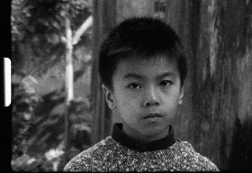

IEC Long
João Pedro Rodrigues, João Rui Guerra da Mata
Portugal 2014
31 min – HD – Cantonese OV Engl ST
DoP: João Pedro Rodrigues, João Rui Guerra da Mata – S: Carlos Conceição, Elsa Ferreira, Nuno Carvalho – E: João Pedro Rodrigues, João Rui Guerra da Mata, Tomás Baltazar – P: João Fidueiras
Macao, Taipa Island, 2014. The word “panchão” was first heard in Macao. From the Chinese “pan-tcheong” or “pau-tcheong”, dictionaries define it as a Macanese regionalism also known as “China cracker” or “Chinese rocket”. Who inhabits the ancient Iec Long Firecracker Factory?
monday 12 oct 10.30 pm werkstattkino
João Pedro Rodrigues was born in Lisbon in 1966. After studying biology at Lisbon University he attended the Lisbon Film School, where he obtained his diploma. His public film career began at the 54th Venice Festival in 1997 with the short PARABÉNS!, which won the Special Jury Prize. In 2000 he directed his first fiction feature, PHANTOM, which was screened in the 57th Venice Festival’s Official Competition.
Films (selection) China China 2007 – Red Dawn 2011 – Morning of saint Anthony's day 2012 –The King's body 2013 – Mahjong 2013
João Rui Guerra da Mata was born in Lourenço Marques, Mozambique. He teached Art Direction at the Lisbon Film School from 2004 to 2011. In 1997 he co-starred in the short PARABÉNS!, directed by João Pedro Rodrigues. As an Art Director, he worked in several features and shorts, notably the ones directed by João Pedro Rodrigues, whose films he also co-scripted. This collaboration lately evolved to co-direction, O QUE ARDE CURA (2012) is his debut solo film.
Films (selection) China China 2007 – Red Dawn 2011 – As the flames rose 2012 – Mahjong 2013